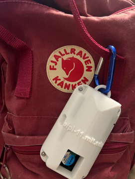
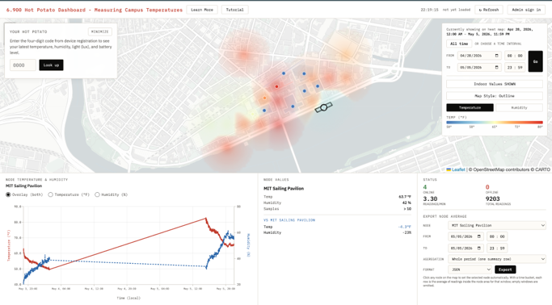
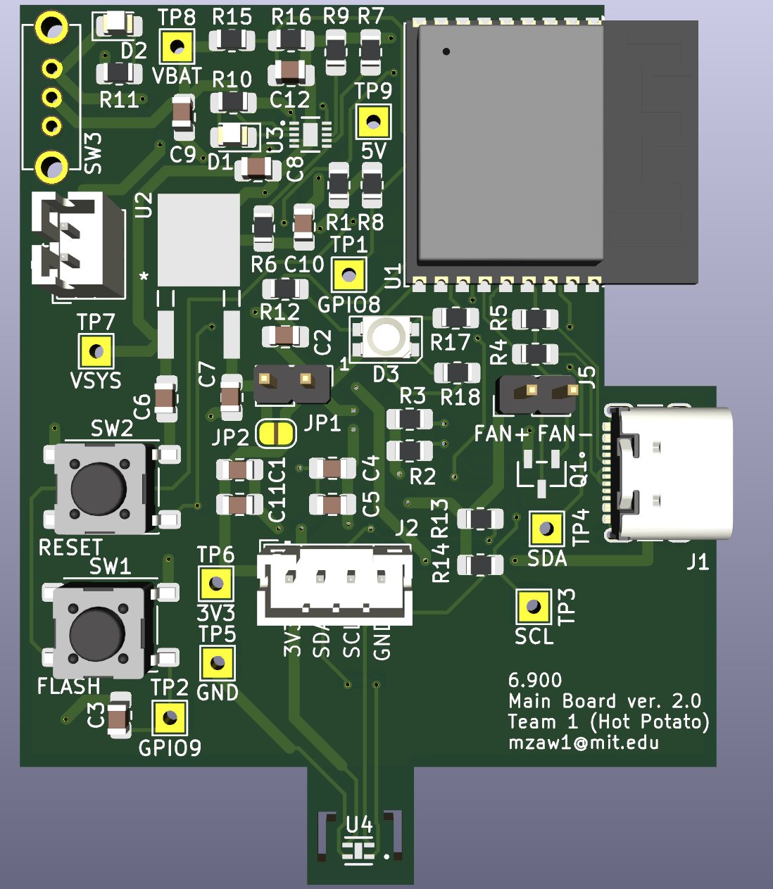
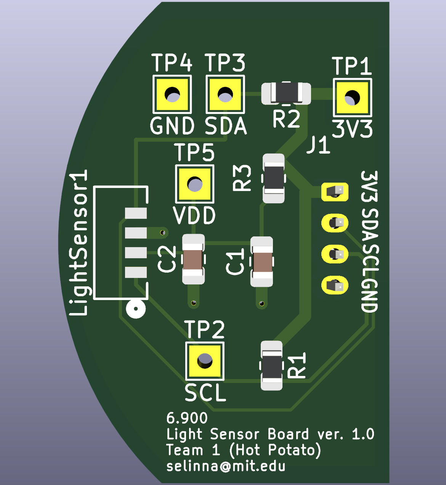

EMBEDDED SYSTEMS / PCB DESIGN · FEB 2026 – MAY 2026
Wearable Heat Monitor
A wearable sensing device that contributes measurements to a crowdsourced heat map of the MIT campus.


Overview
The system combines environmental sensing, embedded hardware, and a cost-conscious custom PCB to collect heat data across campus.
My role
I led hardware development for a nine-person interdisciplinary team and coordinated the device design around the sensing and cost requirements.
Hardware
- Designed an ESP32-C3-based PCB.
- Integrated sensors into a wearable enclosure.
- Maintained a target cost of goods below $20.
Outcome
A portable platform capable of supporting distributed, crowdsourced heat measurements.
Project Details
During Spring 2026, I worked with a team of 9 students to develop a wearable heat monitor for the Engineering for Impact (6.900). The purpose of the system is to understand the local heat experience on various parts of the MIT campus. Users could attach the device to a backpack as it measured ambient temperature and humidity and uploaded the data to a campus heat map while preserving user privacy.
As a part of this project, I primarily led the electronics hardware and PCB development, including component selection, schematic capture, PCB layout, PCB assembly, and testing. The device consists of two PCBs: a main board and a light-sensor board connected by a JST cable. The main board includes an ESP32-C3 microcontroller, battery management system with rechargeable battery, a temperature and humidity sensor (SHT40), USB-C port, buttons for reset and flash, pins for fan control, and a status LED. The light sensor board contains an ambient-light sensor (VEML7700).


One of our primary engineering challenges was the slow response time of the temperature and humidity sensor to environmental changes. We placed our device at MIT sailing, pavilion which has a research-grade weather station to compare our data and observed that the sensor has a very slow response time. To address this issue, we decided to place a fan in front of the sensor to increase airflow and improve heat transfer around the sensor. I also removed copper pour around the sensor and added PCB isolation slots to reduce thermal conduction through the board. Because continuous fan operation would consume unnecessary power, we designed the fan to activate only when the user transitioned between indoor and outdoor environments. We used measurements from the ambient-light sensor to detect these transitions and programmed the fan to run only when a rapid sensor response was needed.
For this project, we were able to achieve the cost of goods (COGS) below $20, temperature measurement accuracy of ±3°F, a battery life of 61 hours per charge, and dimensions of less than 12 inches along every axis. This was my first experience developing a fully functional PCB and complete system from the ground up. Through the project, I learned how to design, assemble, and test a PCB; validate an integrated system; and communicate effectively across an interdisciplinary team spanning hardware, software, and industrial design.